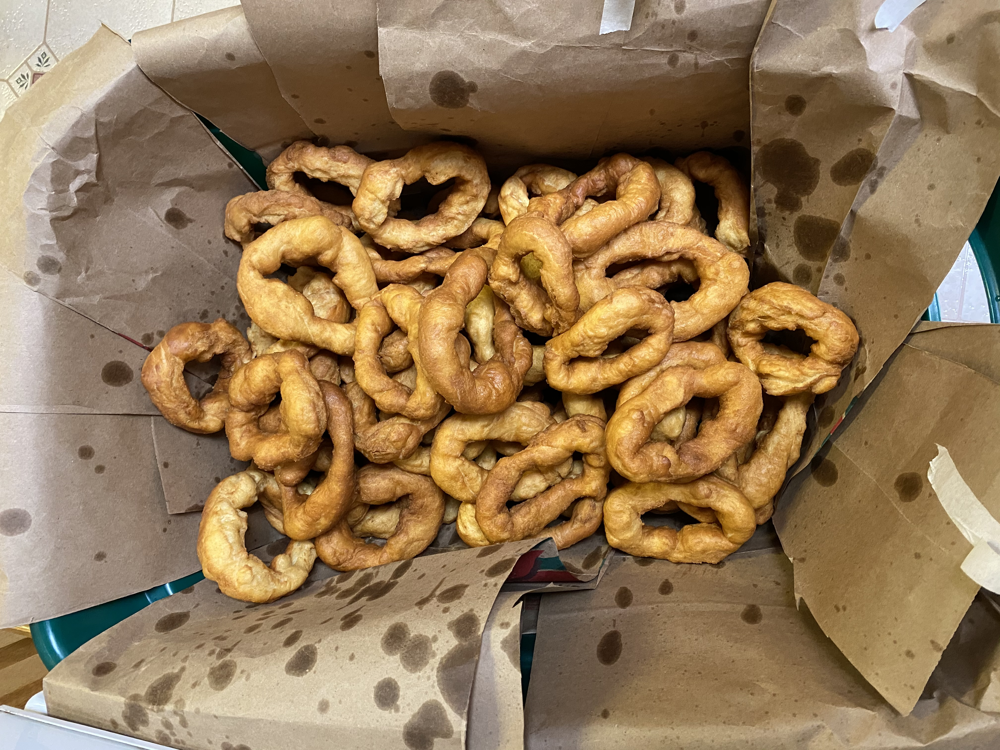

Pitsales

Description
A recipe for Italian doughnut treats. We make these on Christmas Eve. This is a family recipe, adapted and slightly improved by me.
Ingredients
- 5 cups of milk, warm
- 2 packets of yeast
- 10 cups of all-purpose flour
- 4 teaspoons of salt
- 2 tablespoons of baking powder
- 2 handfuls of cornmeal
- 3/4 cup of sugar
- 1/2 cup of Crisco
- canola oil for frying
Directions
- Warm about half of the milk to 100° F (about the temperature where you can stick your finger in and it just feels like nothing). Use this to bloom the yeast. Make sure that it is bubbly after about 5 minutes.
- In the bowl of a stand mixer, combine half of the flour with salt, baking powder, cornmeal and sugar.
- To the bowl of the stand mixer, add the milk and and Crisco. Using a dough hook, mix until all ingredients are well combined. You may need to scrape down the sides of the bowl. Add remaining flour a half a cup at a time until the dough stops sticking to the sides of the bowl. It will stick to the bottom of the bowl just a bit. You may not need all of the flour.
- Continue mixing the dough for about 3-4 minutes. The dough should pass the windowpane test. Don't mix it much longer — we don't want to overmix the dough.
- Prepare a large bowl with a little bit of vegetable oil in the bottom. Turn the dough out into this bowl and turn it to coat the ball of dough. Cover the bowl with a towel or plastic wrap. Leave this bowl in a warm, draft free environment for about 2-3 hours. The dough will rise considerably, about one and a half to two times.
- In the meantime, prepare 5-6 baking sheets by lining them with parchment paper. This will be the landing spot for shaped pitsales to proof before they are fried. Toward the end of the time that the dough is rising, consider preparing a dutch oven or similar vessel for frying by filling with at least three inches of canola oil (or another good oil for frying, like peanut oil).
- Once the dough has risen sufficiently, remove the cling film and give the dough a few kneads in the bowl to degas it.
- After the dough has been punched down, remove small pieces of dough and make some rough, scraggly, irregular doughnut shapes. This is a really informal shaping process — do not roll into balls and then form form into doughnut shapes. They should have varying levels of thickness. See attached photos for examples. As you shape them, place the pitsales on the baking sheets. You can fit a few into a turned off oven, or cover with plastic wrap. They only need to proof for about 30 minutes before being fried. Be careful not to let them proof for too long, or they can deflate when fried.
- Preheat oil to 325º F (~160º C). When the oil comes to temperature and the pitsales have proofed, gently pick up and place into the oil 3-4 at a time. Keep an eye on the temperature as you place them in, as it may drop; raise the heat on the stove to keep it as close to 325º F as possible. Fry for a minute to a minute and a half on each side. Remove and place on a paper towel-lined tray or a laundry hamper lined with brown paper bags.
- Allow to cool for a few minutes before consuming.